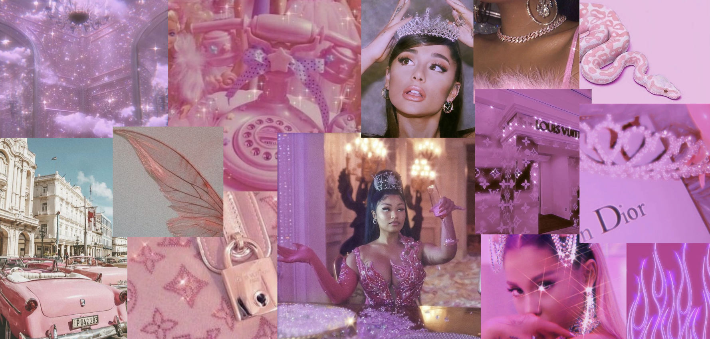
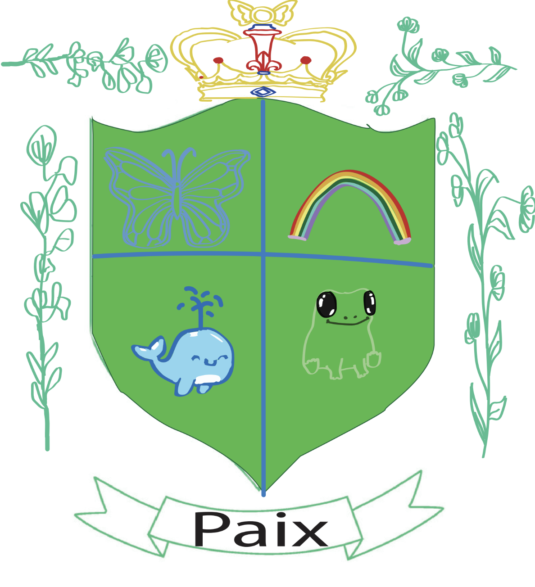

-Visual Design Artifacts-
Editing, Combining,and Tracing Shapes
Artist's statement
Ms.espinal did this and she taught us how to use brush tools and things .
bryson
pop art
Jhene
Pretty pink

shield
